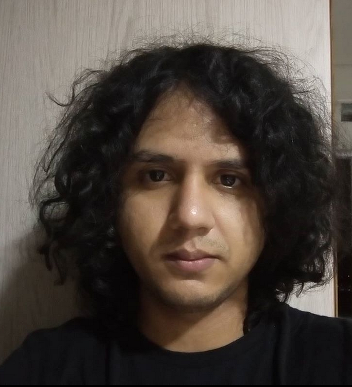

back
Student at
DES-UEM
.
Computer gamer.
I love R, Python and SAS.
Real-time Statistics.
I love games, especially Tom Tom Clancy's The Division and Resident Evil.
My interests are: Survival Analysis and Computational Statistics.
